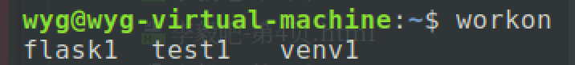

Table of Contents
- 虚拟环境的搭建
- 安装虚拟环境
- 安装虚拟环境扩展包
- 配置虚拟环境
- 创建django项目
- 终端创建django项目
- pycharm创建django项目
虚拟环境的搭建
为什么需要虚拟环境？
django是一个用来开发python网站的框架。因为在开发过程中要用到很多的python包，而python包和django框架本身以来特定的python版本的，当系统的python版本改变的时候，对应的python包和django框架可能出现兼容的问题，所以在开发的时候，我们一般会创建一个隔离的python虚拟环境，在虚拟环境里安装django和python包来工作。（虚拟环境还能方便的管理项目依赖的python包）
安装虚拟环境
1 | sudo pip install virtualenv |
安装虚拟环境扩展包
1 | sudo pip3 install virtualenvwrapper |
安装虚拟环境扩展包的目的是使用更加简单的命令来管理虚拟环境
配置虚拟环境
修改用户家目录下的配置文件.bashrc，添加如下内容：
1 | export WORKON_HOME=$HOME/.virtualenvs |
2 | source /usr/local/bin/virtualenvwrapper.sh |
使用source .bashrc命令使配置文件生效。
创建python3虚拟环境的命令如下：
1 | mkvirtualenv -p python3 虚拟环境名称 |
2 | # 例如： |
3 | mkvirtualenv -p python3 test1 |
4 | # 这样就在用户家目录的.virtualenvs目录下创建了一个新的目录test1，test1下保存的就是虚拟环境 |
查看当前有哪些虚拟环境，在终端输入workon，然后按3次tab键，或者输入workon加一个空格，然后按两下tab键

使用某个虚拟环境的命令如下：
1 | workon 虚拟环境名称 |
2 | 例如： |
3 | workon test1 |
删除虚拟环境，需要先退出再删除
注意：在虚拟环境中安装python包不需要用sudo，否则会安装到主机里，而不是虚拟环境里
创建django项目
终端创建django项目
1 | django-admin startproject 项目名 |
1 | python3 manage.py startapp app名 |
注意：使用终端创建的项目，需要手动把创建的应用名称写到setting.py文件的installed_apps配置项里
1 | python3 manage.py runserver |
pycharm创建django项目
新建django项目，选择解释器的时候，可以选择一个虚拟环境的python解释器的位置。如果虚拟环境没有django框架的话，会先安装django框架（这样安装django框架比较慢，不如直接在终端中启动虚拟环境然后安装django框架的速度快）